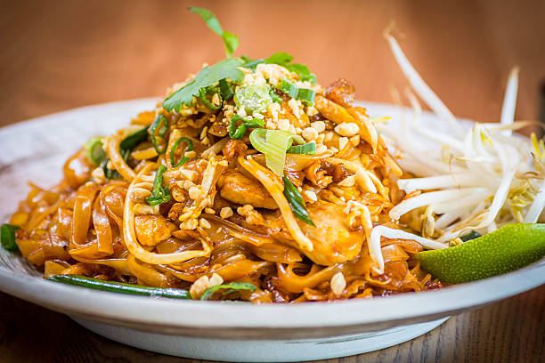

Pad Thai

Pad Thai - Description
Pad Thai is a delicious stir fry noodle dish from the country Thailand. It is incredibly easy to prepare, given you have access to the right utilities, and can be made in large enough portions to feed the whole family.
Pad Thai is often served as a main course along with shrimp, chicken, tofu, or steamed veggies. This makes Pad Thai a flexible, delicious option fit for all sorts of different diets.
Pad Thai - Ingredients
- 8oz. rice noodles
- 2 TBsp vegetable oil
- 2 TBsp minced garlic
- 8oz. uncooked chicken, shrimp, or tofu
- 2 large eggs
- 2 green onions, chopped
- 1/2 cup peanuts
- 1 lime
- 1/2 cup fresh cilantro, sliced
- 3 Tbsp fish sauce
- 1 TBsp soy sauce
- 4 TBsp light brown sugar
- 2 TBsp rice vinegar
Pad Thai - Steps
- Cook noodles until tender
- Make sauce by combining and mixing fish sauce, soy sauce, light brown sugar, and rice vinegar into a bowl.
- Heat oil in large sauce pan over medium-high heat. Add shrimp, chicken, and/or tofu and minced garlic. Cook until cooked through.
- Push everything to the side of the pan. Add oil and beaten egg. Scrample eggs as they cook.
- Add Noodles, sauce, and peanuts to the pan. Toss evenly to combine.
- Garnish with green onion, cilantro, and lime wedge.
- Enjoy!